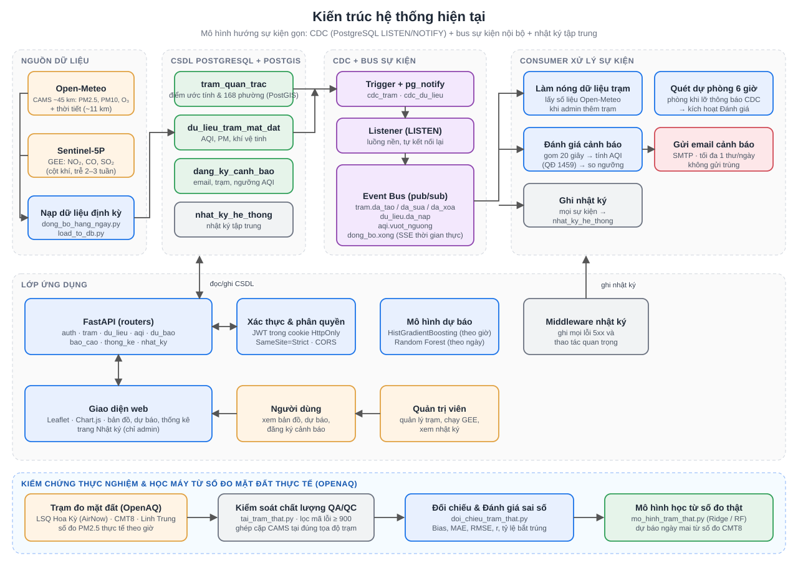
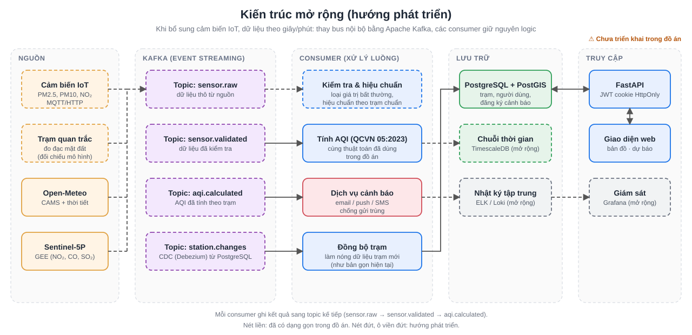

Hệ thống Giám sát, Quản lý & Dự báo Chất lượng Không khí TP.HCM
Thông tin
- Sinh viên: Lê Ngọc Ánh Dương · MSSV 1250080037
- Giảng viên hướng dẫn: TS. Dương Thị Thúy Nga
- Năm thực hiện: 2026
Mục tiêu
- Tích hợp dữ liệu môi trường không khí từ nhiều nguồn vào một cơ sở dữ liệu không gian.
- Trực quan hóa trên bản đồ, cảnh báo và dự báo AQI cho TP.HCM.
- Trình bày minh bạch bản chất, độ trễ và giới hạn của từng loại dữ liệu.
Chức năng chính
- Bản đồ: màu theo phường/xã (ước tính), bản đồ nhiệt, số liệu theo giờ, vị trí của tôi.
- Danh sách điểm ước tính và So sánh: quản lý điểm (admin), so sánh các điểm.
- Cảnh báo: AQI theo giờ, khuyến cáo theo nhóm đối tượng, đăng ký nhận cảnh báo qua email.
- Dự báo: dự báo PM2.5/AQI ngày tới và nhiều ngày bằng Random Forest, lời khuyên cá nhân hóa.
- Thống kê: xu hướng, phân bố mức AQI, số ngày vượt ngưỡng QCVN.
- Báo cáo: tóm tắt dễ hiểu và xuất Excel/PDF.
- Phương pháp & Độ chính xác: cách tính VN_AQI, quy trình học máy (Hồi quy, Phân loại, Chuỗi thời gian) và kết quả kiểm chứng thực nghiệm.
So với các hệ thống hiện có
Bảng đối chiếu đặc trưng kỹ thuật giữa các nhóm hệ thống giám sát chất lượng không khí hiện nay và mô hình tích hợp của đề tài AirHCM.
| Tiêu chí | Cổng quan trắc của cơ quan nhà nước | IQAir / AirVisual | Mạng cảm biến giá rẻ (vd. PAM Air, AirGradient) | AirHCM (đồ án) |
|---|---|---|---|---|
| Nguồn số liệu | Trạm quan trắc tự động chuẩn | Trạm chính thức + cảm biến, có mô hình | Cảm biến quang học giá rẻ | Mô hình CAMS/ERA5 + vệ tinh Sentinel-5P + hiệu chỉnh trạm mặt đất OpenAQ |
| Phạm vi không gian | Tập trung tại vị trí đặt trạm | Phụ thuộc mật độ trạm khu vực | Phân bố theo điểm lắp đặt | Nội suy không gian IDW trên 168 phường/xã (PostGIS) |
| Dự báo & Phân loại | Thường không công bố dự báo theo giờ | Có (phương pháp thương mại đóng) | Thường không | Dự báo 24 giờ, 7 ngày, phân loại nguy cơ vượt chuẩn; công bố đầy đủ chỉ số kiểm chứng |
| Thang AQI | VN_AQI | US AQI | Thường US AQI | VN_AQI (QĐ 1459/QĐ-TCMT), đối chiếu QCVN 05:2023 và WHO 2021 |
| Mã nguồn, dữ liệu | Đóng | Đóng, thương mại | Một phần mở | Mở (MIT) kèm bộ dữ liệu kiểm chứng |
| Công cụ phân tích | — | — | — | Phân tích hướng gió, mô phỏng kịch bản thời tiết, tra cứu không gian PostGIS, phản ánh cộng đồng |
Kiến trúc hệ thống
Hệ thống dùng mô hình hướng sự kiện gọn: khi admin thêm điểm hoặc có dữ liệu mới nạp vào CSDL, trigger PostgreSQL (LISTEN/NOTIFY) phát sự kiện lên bus nội bộ; các consumer tự tính AQI, gửi email cảnh báo và ghi nhật ký tập trung.

Hướng mở rộng quy mô lớn: tích hợp mạng cảm biến mặt đất thời gian thực + Apache Kafka (kiến trúc định hướng)
Với 16 điểm ước tính và chu kỳ đồng bộ theo giờ/ngày, bus sự kiện nội bộ kết hợp PostgreSQL LISTEN/NOTIFY đáp ứng đầy đủ độ trễ dưới 1 giây mà không tốn tài nguyên vận hành cụm broker. Giao diện publish/subscribe được thiết kế tách biệt để sẵn sàng chuyển sang Apache Kafka khi kết nối hàng nghìn cảm biến thời gian thực.

Công nghệ
- Backend: FastAPI, SQLAlchemy, xác thực Argon2id + phiên HttpOnly + 2FA TOTP + OAuth2 (Google)
- Sự kiện: PostgreSQL LISTEN/NOTIFY (CDC) + bus nội bộ, SSE thời gian thực, nhật ký tập trung
- CSDL không gian: PostgreSQL 17 + PostGIS 3.6 (168 phường/xã, chỉ mục GiST)
- Dữ liệu: Open-Meteo (CAMS/ERA5), Sentinel-5P (Google Earth Engine), OpenAQ (trạm mặt đất)
- Học máy: HistGradientBoosting (theo giờ), Random Forest & Decision Tree/KNN (theo ngày, hồi quy và phân loại nguy cơ vượt ngưỡng) – scikit-learn
- Giao diện: Web tĩnh (Leaflet, Chart.js, PWA Offline/Web Push) + ứng dụng Android (Capacitor)
Đặc điểm & Phạm vi dữ liệu
- PM2.5, PM10, O₃ được tổng hợp từ mô hình tái phân tích và dự báo khí quyển CAMS kết hợp khí tượng ERA5 theo giờ.
- NO₂, CO, SO₂ là dữ liệu mật độ cột khí tầng đối lưu từ vệ tinh Sentinel-5P (TROPOMI) qua Google Earth Engine.
- Bản đồ 168 phường/xã sử dụng thuật toán nội suy nghịch đảo khoảng cách (IDW) và truy vấn hình học trên PostGIS.
- Mô hình học máy được kiểm chứng độc lập với dữ liệu trạm quan trắc mặt đất OpenAQ tại TP.HCM — chi tiết tại trang Phương pháp & Độ chính xác.
* Hệ thống phục vụ mục đích học thuật, không thay thế số liệu công bố chính thức của cơ quan quản lý.